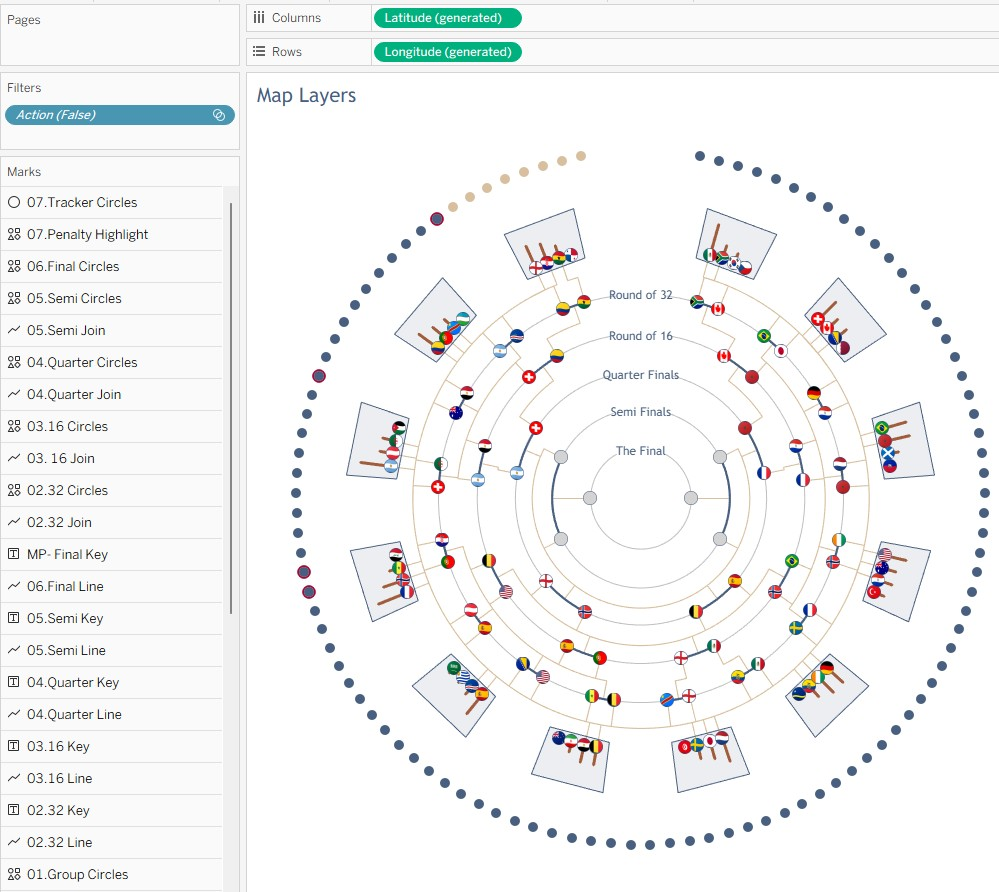
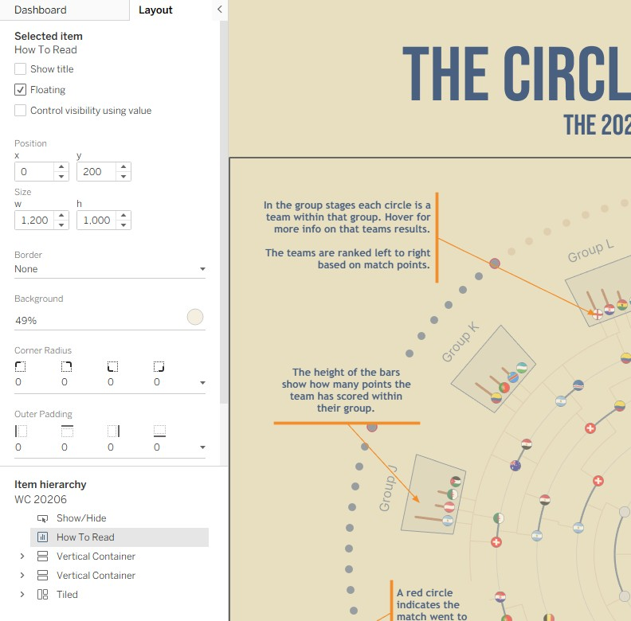
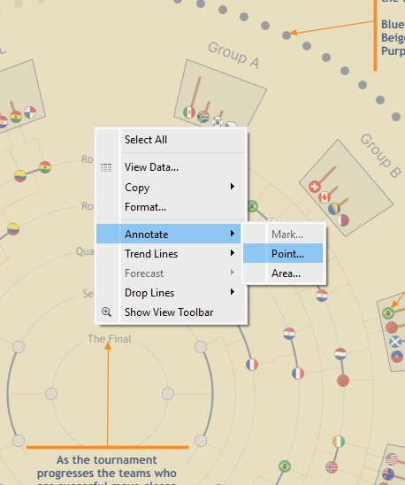
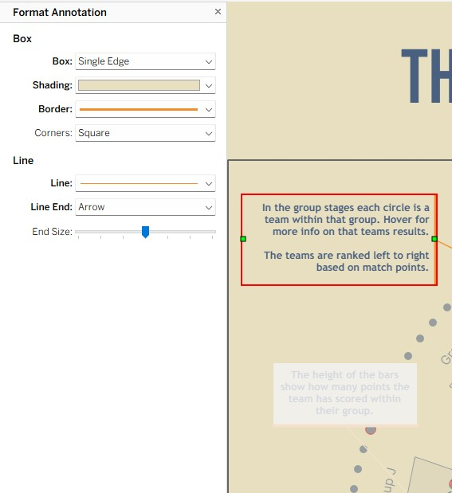
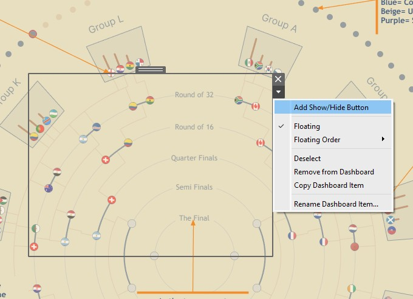
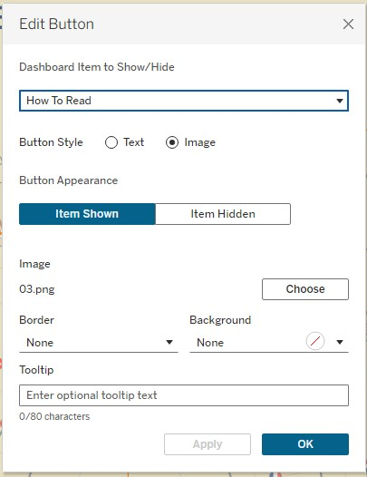
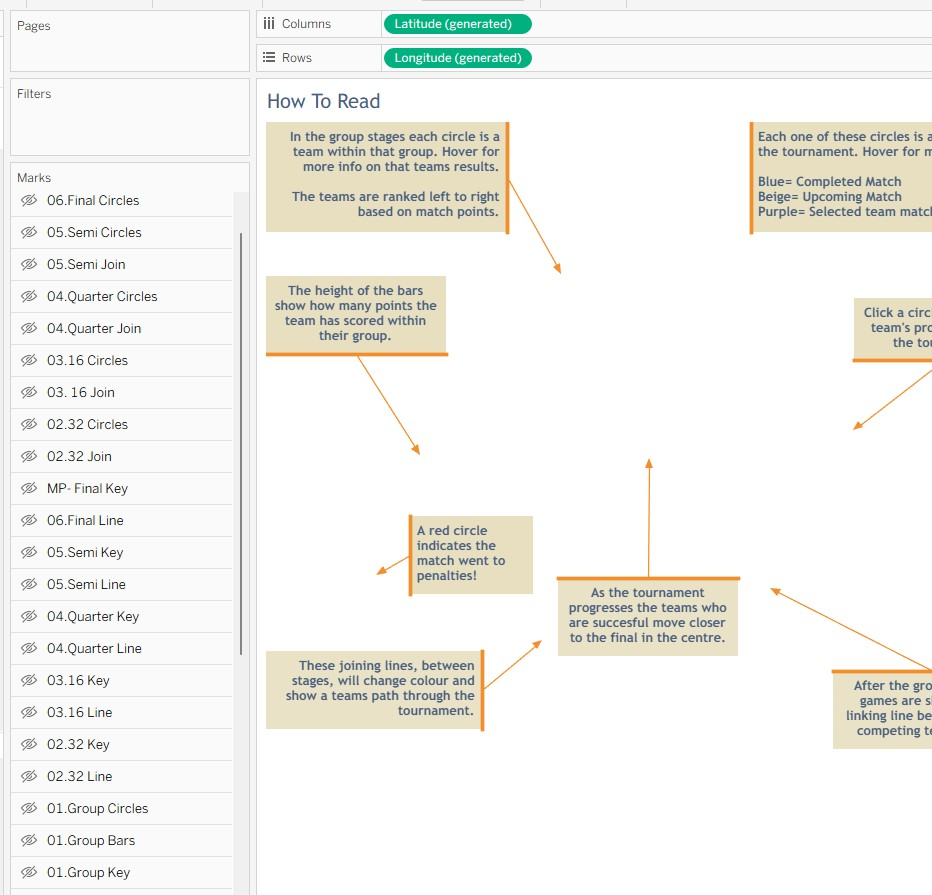

The Power Of A Show/Hide Button

In Tableau I love building complex things that help me practise my skills, but these can sometimes be difficult to read. This post is about how I use the How To Read option to make my vizs more readable and give the user a hint as to what to look for.
Section 1: The Setup
The first thing you need to do is build your viz as normal.


Step 1:
Once we have our viz to get this to work, we need to duplicate our sheet where we have built our viz.
Step 2:
Bring this new sheet onto your dashboard, as a floating object, and place it in exactly the same location as the main viz. I personally like to add a background colour to it, this is normally the same colour as the existing background and about 50% opacity. This is so you can see what is underneath but it also gives a nice visual separation.

Step 3:
Add your annotations to this sheet. This is where the magic happens. Because you have a clean sheet you can right click anywhere and annotate a point. Once you have this annotation box you can then change all the formatting to really make your information point pop. In this instance I am using a background, so the text stands out, a nice bright arrow, and my personal favourite, the single edge line.


Step 4:
Once you have your new sheet in place and done your annotations, you need to add the functionality to let the user show or hide it. This is done using Tableau's Add Show/Hide Button. Simply click on this.

You will then be presented with a pop out box where you can make adjustments to the appearance of this button. You can use text or images and have different things showing depending on whether the sheet is showing or hidden. In my case I used two images, an info icon when closed and a cross icon when it is showing.


Step 5:
Once you have done all the above, test your button works and make sure you are happy with all the formatting. I find it easier to do it whilst on the dashboard itself, sometimes if you do it on the sheet things don't always line up as you expect.
Section 2: The Approach
As mentioned above I love using this approach as it is a great way to get lots of information onto a dashboard, but without overwhelming the user. It allows the info to be hidden when not required but easily accessible. If you wanted to take this to the next level you could even have a whole new set of charts appearing over the top, or some dynamic text info relating to what is happening on your charts, the possibilities are endless.
Section 3: Results
Once you’ve got your “How To Read” sheet duplicated, floating in the same position as the main viz, and your annotations styled to stand out (background, arrow, and that clean single-edge line), the dashboard suddenly feels like it has a guide built in.
- Improved clarity: the key message is there, but it only shows up when the reader asks for it. You’re no longer forcing every explanation to be visible at all times.
- Changed the reading flow: instead of “scan everything and guess what matters”, the user gets hints at the moments they need them. That makes exploring feel more intentional.
- Less clutter, more confidence: hiding the sheet by default removes visual noise, and toggling it back on becomes a deliberate action (so the dashboard doesn’t feel busy).
- It scales: when your dashboard grows more complex, you can add more guidance without redesigning the whole layout.
The biggest practical “gotcha” is easy to miss: don’t just design your annotations, make sure your “How To Read” sheet is set up so it can’t accidentally interfere with interaction when it’s visible. In practice, that means hiding everything on the sheet by default and keeping your Show/Hide button as the only control.
And because placement is everything, the final check is testing on the dashboard itself. Like noted earlier, button formatting and alignment can differ if you configure everything on the sheet rather than in the finished dashboard.
The Last Thread
This is one of those small Tableau patterns that makes a big difference: you can keep the dashboard clean, while still giving your users a hand when they need context. It’s a simple “Show Me” interaction, but it turns complex dashboards into something that feels more readable, more approachable, and genuinely easier to explore.
If you take this further, there’s a lot you can do: from swapping in whole new sets of charts over the top to dynamic text that reacts to what the user is looking at. And if you build a “How To Read” sheet of your own, I’d love to see it.
Rob.